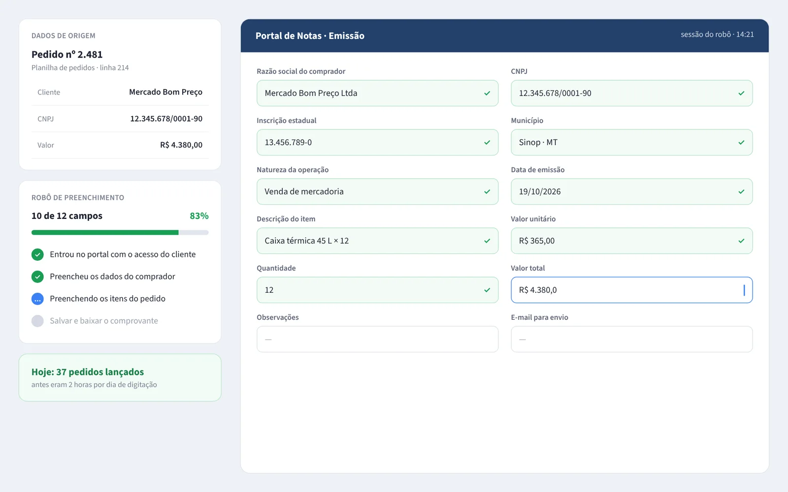

Página de links
Uma página com seus contatos, serviços e links principais, para usar na bio do Instagram.
Prazo médio de criação1 a 2 dias
Criação de sites
Sites sob medida, desenhados primeiro para o celular. E, por trás deles, sistemas internos, automações e atendimento com IA, para o seu negócio funcionar tão bem por dentro quanto aparece por fora.
Seis perguntas rápidas e você cai direto no nosso WhatsApp, sem compromisso.
O que criamos
Sistemas, automações e atendimento com IA, em telas de exemplo com empresas fictícias. Toque em cada tela para ver mais.
Clientes satisfeitos, trabalho bem feito e nenhum lugar que mostre isso. Quem chega pelo Instagram ou por indicação procura um endereço que explique o que você faz e facilite o contato. É isso que o NEXO cria.
Foco principal
Feito sob medida e desenhado primeiro para o celular, porque é por ele que a maior parte das visitas chega.
Abre rápido e funciona bem no celularDo Instagram para o seu site em um toque, com tudo no lugar.
Contato sempre à vistaO botão para falar com você aparece em toda a página.
Um endereço com o seu nomeQue também pode aparecer para quem pesquisa fora das redes sociais.
O link da bio passa a ser o seu endereço.
Uma página com seus contatos, serviços e links principais, para usar na bio do Instagram.
Para quem está começando ou quer uma presença clara e direta. Poucas imagens, pouco movimento e tudo o que o cliente precisa saber.
Mais imagens, vídeos curtos e algumas animações para dar vida à página, sem perder a leveza.
Para empresas que precisam de várias páginas: quem somos, serviços, equipe, conteúdos e contato.
Para produtos e marcas que querem impressionar: vídeos, movimento e efeito 3D que acompanha a rolagem da página.
Uma loja virtual para começar a vender pela internet, com catálogo, carrinho e pagamento.
Lojas maiores, área do cliente e ligação com outros sistemas. O prazo sai do escopo.
Os formatos são um ponto de partida. Todo site é desenhado para o negócio de quem contrata.
Exemplos
Alguns segundos de cada um, do jeito que aparecem na tela. São marcas fictícias, criadas para mostrar o que cada formato entrega.
Site com animação e 3D
Um toca-discos apresentado como filme: a câmera percorre cada peça conforme a pessoa rola a página.
Site intermediário
Ateliê de cerâmica com vitrine das peças, história do ateliê, aulas e encomenda direto pelo site.
Sistemas internos
Quando a planilha já não resolve: cadastros, agenda, estoque, financeiro e rotinas da equipe reunidos em um sistema feito para o seu negócio, com acesso pelo computador e pelo celular.
Exemplo · sistema simples
Agenda do dia, ficha de cada cliente, pacotes de sessões e lembretes que saem sozinhos na véspera.
Exemplo · sistema médio
Pedidos da loja e do site no mesmo lugar, aviso de estoque baixo e acessos diferentes para cada pessoa.
Exemplo · financeiro
O que entrou, o que vence hoje e quem está em atraso, com filtros de um clique.
Telas ilustrativas, com empresas e dados fictícios.
Um processo principal organizado, como agenda e clientes ou pedidos e entregas.
Vários setores conversando: vendas, estoque, financeiro, equipe com acessos diferentes e relatórios.
A operação inteira em um sistema próprio, construído por etapas e ligado aos programas que você já usa.
Tem uma planilha que só você entende? Ela pode virar um sistema.
Criar meu sistemaAutomações
Avisos, envios, preenchimentos e ligações entre as ferramentas que você já usa. Seus lembretes passam a ser enviados sozinhos, e você não precisa mais fazer isso à mão.
01 · Automação de dados
O pedido feito no site cai na planilha, a equipe recebe o aviso e o relatório chega pronto, sem ninguém copiar e colar.

02 · Automação de preenchimento
Portais, sistemas e formulários preenchidos com os dados que você já tem, campo a campo, enquanto a equipe cuida do que importa.
03 · Automação de criação
Contratos, propostas, recibos e lembretes criados a partir dos seus modelos, com os dados certos, e enviados ao cliente.
Telas ilustrativas, com empresas e dados fictícios.
Qual tarefa toma mais tempo da sua semana? Comece por ela.
Automatizar minha rotinaAgentes com IA
Um agente que conversa com os seus clientes pelo WhatsApp: tira dúvidas, informa preços e horários e marca atendimentos. Sempre sincronizado com o sistema interno e com as informações da sua empresa.
Responde as dúvidas mais comuns, informa preços e horários e agenda pelo WhatsApp oficial da sua empresa.
Faz o que você pedir, ligado ao sistema interno: consulta pedidos, cadastra clientes, gera documentos e avisa a equipe.
Planilhas limpas e fáceis de manter. Agenda estruturada para que nenhum compromisso se perca.
Organizar planilhas e agenda“A planilha que só uma pessoa entendia fica simples para toda a equipe.”
Para quem
Consultores, freelancers e prestadores que precisam ser encontrados e passar confiança sozinhos.
Agências, escritórios e empresas com 2 a 10 pessoas na operação.
Negócios que estão crescendo e precisam se estruturar antes que a rotina vire caos.
Como funciona
Entendemos como você trabalha e o que o site precisa mostrar.
Você recebe uma proposta sob medida, com o site em primeiro lugar.
Montamos a primeira versão e ajustamos com você até a aprovação.
Publicamos, e o link da bio passa a ser o seu endereço. Sistemas, automações e agentes entram em uso com a sua equipe.
Um site que apresenta bem o seu trabalho, funciona no celular e facilita o contato.
Um contrato de 12 meses: a implantação, paga uma vez, e a mensalidade que mantém tudo funcionando.
Número de clientes ou posição no Google. Preferimos combinar o que depende de nós.
Responda seis perguntas rápidas e fale com a gente no WhatsApp já sabendo por onde começar. Sem compromisso.